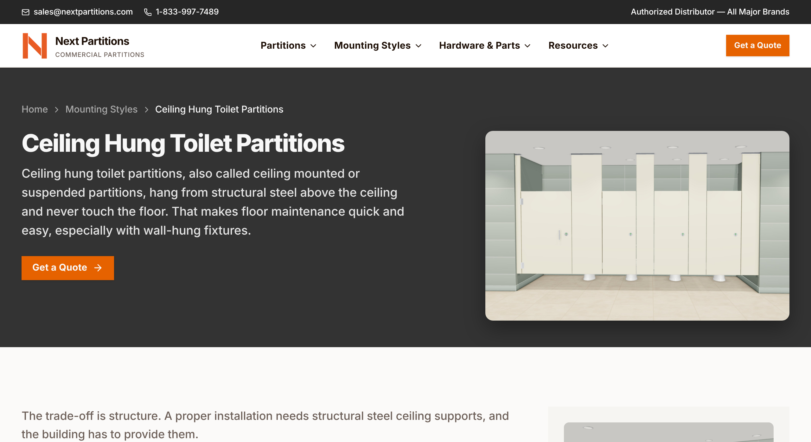
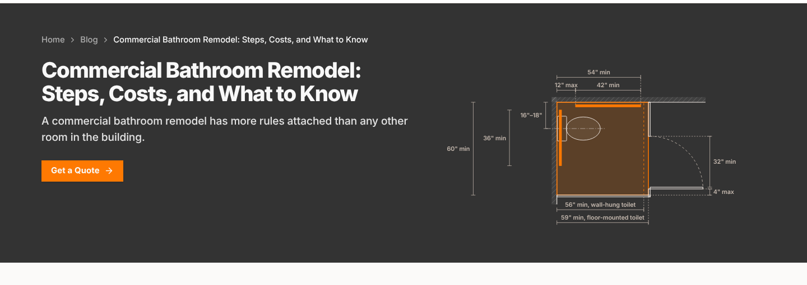
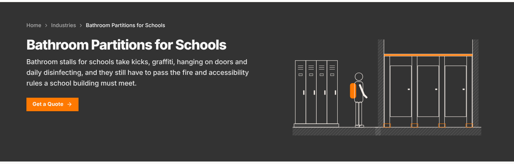

This week we put the blog plan in order of search demand, wrote the pages at the top of it, rebuilt the schools industry page, and listed your business on trade directories. The 28 new pages have been live since November 10. The six blog posts are not live yet: they wait for Marc to switch them on.
What we did this week
The live pages. The 28 material, mounting style, hardware and guide pages have been live since November 10, with their drawings and 3D views.

The ceiling hung page, live on your site.
Five guide pages went live with empty "expert advice" boxes, where questions for you were still open. We corrected this on November 16, and it reaches the site with Marc's next publish.
The blog plan, put in order of demand. The February research measured searches for your main keywords, and its blog plan lists 51 topics. This week we added current US search numbers for every one of those topics, and for the related phrases and questions people type.
Most of the demand sits on topics that now have a live page: ADA requirements (about 3,600 searches a month) and stall dimensions (about 1,600).
Two topics turned out bigger than expected: commercial bathroom remodeling (about 1,800) and urinal dividers (about 1,100).
Topics with little or no search demand move to the back of the plan.
The posts people search for most now come first.
Five pages written from that research, all in the preview:
Commercial Bathroom Remodel: Steps, Costs, and What to Know (about 1,800 searches a month).
Urinal Dividers and Screens, a new product page (about 1,100).
How to Design a Modern Commercial Bathroom (about 490).
How Tall Are Bathroom Stalls? (about 260, with almost no competition).
Why Do Bathroom Stalls Have Gaps? now also answers "why do American bathroom stalls have gaps" (about 460 more).

The remodel post in the preview.
The schools industry page, rebuilt. About 970 people a month search for school bathroom stalls. Your live schools industry page and our planned blog post were aiming at the same searches, so we made them one stronger page, with its own illustration.
Corrected: the elementary school heights, which didn't leave the floor clearance an accessible stall needs.
Added: the fire rule for solid plastic (HDPE), the rules for children's accessible stalls, and your advice on HDPE or phenolic for schools.

The top of the rebuilt schools page in the preview.
Business listings.
Your office address is now set for every listing: 9 Perlman Dr, Suite 201, Spring Valley, NY.
We submitted Next Partitions to trade and business directories, including Thomasnet, IndustryNet and the Procore Construction Network, all with the same name, phone and website.
New listings are created under sales@nextpartitions.com, so they belong to you.
The installer directory: a plan to go live. It launches in three stages: first the state pages and the installer application page, then installer recruiting in your first area, then each city page once it has 3 checked installers. It goes live once the final configurator and your prices are in place on the site.
Seven short answers. Three guide pages and three new pages each have a question for you. A sentence or two each, by email or voice note. The list comes with this update.
Five to ten photos of finished jobs you have the rights to use.
A list of past customers (name, email, what they bought, roughly when), so we can send them your review link.
Coming next
The blog goes live: Marc publishes the correction and switches on the six blog posts.
The new pages go to Marc: the five pages from this week and the rebuilt schools industry page.
The restaurants page, rebuilt the same way as schools.
More listings: Apple Maps verification, then Yelp, the BBB, LinkedIn and Facebook.
A pilot video, "The 4 mounting styles explained", built from our drawings.
The installer directory goes to Marc once the final configurator and your prices are in place on the site.
Search figures are US monthly searches from Semrush, November 16, 2026, summed over each topic's phrases. Pages in the preview are not live yet.